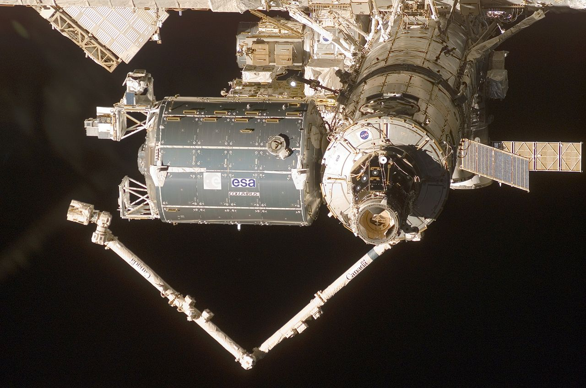

Is a pressurised lab linked to Harmony. It allows research to be carried out in a weightless environment. Experiments and applications can be performed outside the module, in the vacuum of space, thanks to four external mounting platforms that can accommodate external loads. Columbus is ESA’s greatest contribution. The Columbus Research Laboratory is Europe’s largest contribution to the International Space Station. Columbus is a multifunctional pressurized laboratory permanently attached to Node 2 of the ISS. The Columbus laboratory’s flexibility provides room for the researchers on the ground, aided by the station’s crew, to conduct thousands of experiments in life sciences, materials sciences, fluid physics and other research in a weightless environment not possible on Earth. In addition, experiments and applications can be conducted outside the module within the vacuum of space, thanks to four exterior mounting platforms that can accommodate external payloads in space science, Earth observation and technology. 